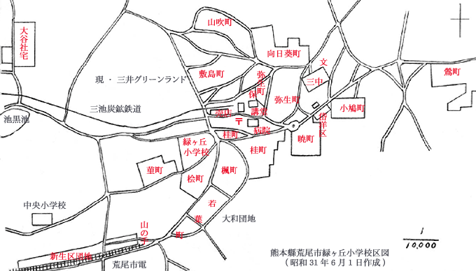

|
緑ヶ丘社宅は、向日葵町、山吹町、敷島町、弥生町、楓町、桂町、菫町、檜町、若葉町、暁町、
小鳩町、鶯町の各社宅を総称した名称で、昭和２３年から建設、現在の三井グリーンランド付近一帯から第三セクターの大型
店舗である荒尾シティモールまでの間に、１２町内があった。しかし、平成６年、三井石炭鉱業は社宅を取り壊して荒尾市に
売却することを決定。現在、炭鉱社宅の面影はない。なお、大谷社宅は緑ヶ丘社宅には含まれていない 。
 熊本県荒尾市による昭和35年10月1日現在「行政区別人口および世帯数一覧表」によると、
緑ヶ丘 総世帯数1575 人口7588（男3710、女3878） 敷島町 世帯数111 人口540（男257、女283） 山吹町 世帯数115 人口572（男279、女293） 弥生町 世帯数117 人口645（男308、女337） 桂町 世帯数159 人口795（男390、女405） 楓（かえで）町 世帯数141 人口718（男355、女363） 若葉町 世帯数163 人口725（男352、女373） 桧（ひのき）町 世帯数119 人口555（男278、女277） 菫（すみれ）町 世帯数92 人口446（男225、女221） 鶯（うぐいす）町 世帯数199 人口930（男465、女466） 暁町 世帯数92 人口442（男209、女233） 小鳩町 世帯数93 人口431（男210、女221） 平成１６年３月３１日現在にあっては、
|